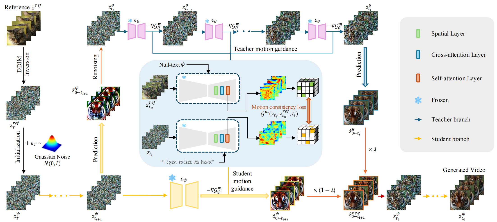

Distilled video generation models offer fast and efficient synthesis but struggle with motion customization when guided by reference videos, especially under training-free settings. Existing training-free methods, originally designed for standard diffusion models, fail to generalize due to the accelerated generative process and large denoising steps in distilled models. To address this, we propose MotionEcho, a novel training-free test-time distillation framework that enables motion customization by leveraging diffusion teacher forcing. Our approach uses high-quality, slow teacher models to guide the inference of fast student models through endpoint prediction and interpolation. To maintain efficiency, we dynamically allocate computation across timesteps according to guidance needs. Extensive experiments across various distilled video generation models and benchmark datasets demonstrate that our method significantly improves motion fidelity and generation quality while preserving high efficiency.
In MotionEcho pipeline, given a reference video, motion priors are extracted to initialize the student model with a motion-preserving noisy latent. During inference, the teacher (top) and student (bottom) models perform motion customization using motion loss gradients. Teacher guidance is applied via prediction interpolation at sub-interval endpoints. The student then generates the final video in a few steps with high motion fidelity.
We compare MotionEcho with baseline methods on two benchmarks corresponding to different base models. Ours method (MC+TurboV2 16 steps) achieves the best performance across text alignment, motion fidelity, and FID score, while maintaining competitive temporal consistency within just 13 seconds. Even at 8 steps, it outperforms most baselines across all metrics in 9 s, and at 4 steps maintains a solid FID of 347.91 and strong temporal coherence in only 6 s. In contrast, Control-A-Video and MotionDirector show similar or higher inference times but significantly lower scores in key quality metrics and require costly training. Additionally, we apply our method into other distilled video models (e.g., AnimateDiff-Lighting (AD-L) in Table 2) further verify the effectiveness, superiority and flexibility of our method. The bar chart below presents win‐rate percentages over 36 samples from a user study, evaluated on four subjective criteria—Text Alignment, Temporal Consistency, Motion Fidelity, and Appearance Appeal—highlighting the perceptual advantage of our approach.
@misc{rong2025trainingfreemotioncustomizationdistilled,
title={Training-Free Motion Customization for Distilled Video Generators with Adaptive Test-Time Distillation},
author={Jintao Rong and Xin Xie and Xinyi Yu and Linlin Ou and Xinyu Zhang and Chunhua Shen and Dong Gong},
year={2025},
eprint={2506.19348},
archivePrefix={arXiv},
primaryClass={cs.CV},
url={https://arxiv.org/abs/2506.19348},
}